Edexcel GCSE (9–1) History • Option 26/27
Conflict in the Middle East
1945–1995
Key Topic 3: Attempts at a solution, 1974–95
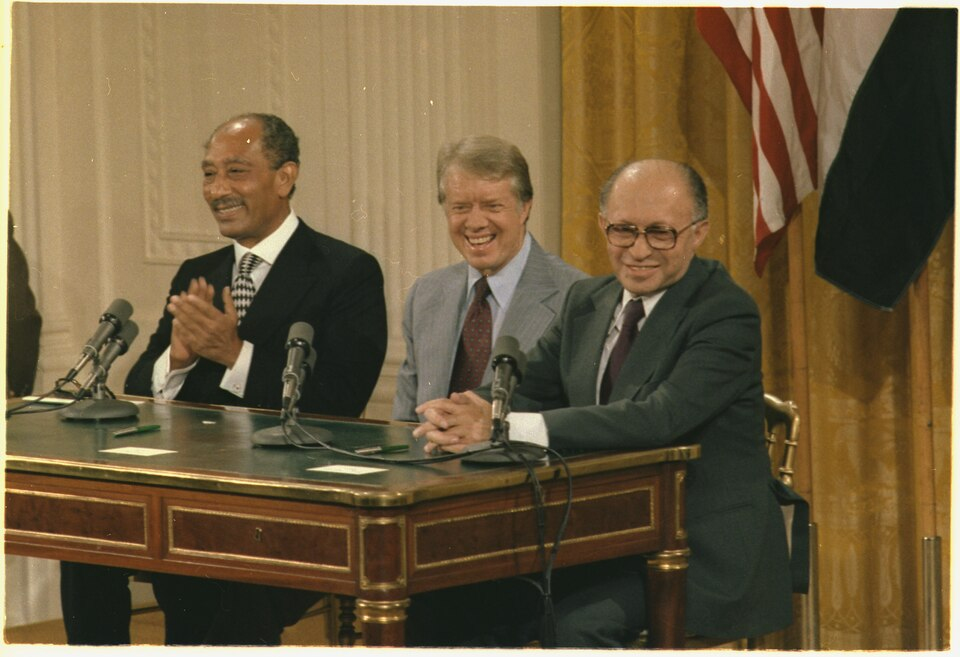
David Ben-Gurion reads the Declaration of Independence beneath the portrait of Theodor Herzl (Tel Aviv, 14 May 1948).
Official Course Textbook
Enquiry: “Why has peace proved so elusive in the Middle East?”
Contents
|
Lesson 1: KT 3.1: Diplomatic Negotiations: From Shuttle Diplomacy to Camp David, 1974–1979
|
|
|
Lesson 2: KT 3.2: The Palestinian Issue: Lebanon, Sabra & Shatila, and the First Intifada, 1974–1993
|
|
|
Lesson 3: KT 3.3: Attempts at a Solution: From the Oslo Accords to Oslo II, 1988–1995
|
|
L1: KT 3.1: Diplomatic Negotiations: From Shuttle Diplomacy to Camp David, 1974–1979[[SRC_MARKER:L9_Start]]
Learning Objectives
Understand the significance of the oil crisis and the involvement of the USA and the USSR.
Analyze Kissinger, ‘shuttle diplomacy’ and the reopening of the Suez Canal.
Evaluate Sadat’s visit to Israel (1977), Begin’s visit to Egypt (1977), US President Carter and Camp David (1978) and the Treaty of Washington (1979).
In an unprecedented move that stunned the world, Egyptian President Anwar Sadat traveled to Jerusalem in 1977, offering peace. This bold step shattered the Arab taboo of refusing to talk to Israel and paved the way for the historic Camp David Accords, fundamentally altering the Middle East peace process.
Did you know?
- Camp David Accords (1978): Brokered by US President Jimmy Carter, leading to the first peace treaty between Israel and an Arab nation.
- Sinai Return: Israel agreed to return the entire Sinai Peninsula to Egypt in exchange for full diplomatic recognition.
- Assassination: Sadat was viewed as a traitor by many Arabs and was assassinated by Islamic extremists in 1981.
Recall & Retrieval
1. On what Jewish holy day did Egypt and Syria launch their surprise attack in 1973?
2. What cartel of Arab oil-producing nations imposed the October 1973 oil embargo?
3. By how much did the price of crude oil increase per barrel following the 1973 oil embargo?
4. Who served as US Secretary of State and pioneered "shuttle diplomacy" between 1974 and 1975?
5. Which vital international waterway, closed since June 1967, was reopened by Egypt in June 1975?
6. Which right-wing Israeli political party won the May 1977 election, ending 29 years of Labour rule?
7. Who became Prime Minister of Israel in May 1977 having formerly commanded the Irgun?
8. On what date did Egyptian President Anwar Sadat land in Israel to address the Knesset in Jerusalem?
9. What foundational diplomatic principle did UN Resolution 242 establish in November 1967?
10. In which Egyptian city did Menachem Begin meet Sadat on Christmas Day 1977 for reciprocal talks?
Vocabulary Check
The Odd One Out: Circle ONE term that does not belong with the others. Explain your reasoning: What historical connection links the other terms, and why is your chosen term different?
Stagflation | Shuttle Diplomacy | Sinai II Agreement | Likud | Camp David Accords | Treaty of Washington
Teacher Model / Pupil Reasoning:[1.1] The 1973 Yom Kippur War caused an unprecedented global economic crisis. Angered by emergency US military airlifts to Israel, Arab OPEC members enacted the "oil weapon," cutting oil production and imposing a total embargo on the United States and the Netherlands. Consequently, crude oil prices quadrupled from $3 to $12 a barrel, triggering fuel shortages, soaring inflation, and severe "stagflation" across Western economies. For Washington, resolving the Arab-Israeli conflict shifted from a distant regional issue into an urgent strategic and economic imperative.
[1.2] To defuse frontline flashpoints and prevent a superpower confrontation, US Secretary of State Henry Kissinger launched "shuttle diplomacy". Flying tirelessly between Cairo, Damascus, and Jerusalem to relay messages between hostile leaders who refused direct talks, Kissinger pioneered "step-by-step diplomacy." Rather than seeking an impossible comprehensive peace, he brokered phased military disengagements: Sinai I (January 1974), the Golan Disengagement (May 1974), and Sinai II (September 1975). These pacts returned strategic passes and oil fields to Egypt, allowing the Suez Canal to officially reopen on 5 June 1975 after an eight-year closure and providing a vital economic lifeline.
Source A: Archival Photograph: President Anwar Sadat Addressing the Israeli Knesset in Jerusalem (20 November 1977)
Archival Evidence • Expand ▼
[[SRC_MARKER:L9_Source_5]]
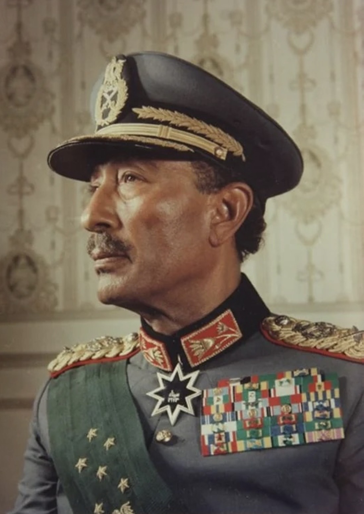
Egyptian President Anwar Sadat addressing members of the Israeli Knesset in Jerusalem, with Prime Minister Menachem Begin seated behind him.
Discussion / Hinge Question: How does Source A help explain why Anwar Sadat’s visit to Jerusalem was viewed across the world as a dramatic psychological turning point in the Arab-Israeli conflict?
[2.1] In May 1977, Israeli politics underwent a seismic shock when the right-wing Likud coalition, led by former Irgun commander Menachem Begin, won the national election, ending 29 unbroken years of Labour Party dominance. Begin held fierce ideological convictions regarding the biblical "Greater Land of Israel" (Eretz Yisrael), viewing the West Bank (Judea and Samaria) as non-negotiable Jewish land. International observers feared that Begin’s hawkish ideology had permanently halted any hope of regional peacemaking.
[2.2] However, Egyptian President Anwar Sadat faced desperate internal pressures: a bankrupt national economy, crippling foreign debt, and violent food riots in Cairo. Concluding that Egypt could never develop economically while locked in perpetual mobilization, Sadat made an astonishing gamble. On 19 November 1977, Sadat flew directly to Tel Aviv—becoming the first Arab head of state to visit Israel. Addressing the Israeli parliament in his historic Knesset speech (Source A), Sadat announced: "We accept to live with you in permanent peace based on justice... No more war, no more bloodshed!" This bold act shattered thirty years of psychological taboo in a single afternoon.
Source B: Archival Photograph: Menachem Begin, Jimmy Carter, and Anwar Sadat at Camp David (September 1978)
Archival Evidence • Expand ▼
[[SRC_MARKER:L9_Source_6]]
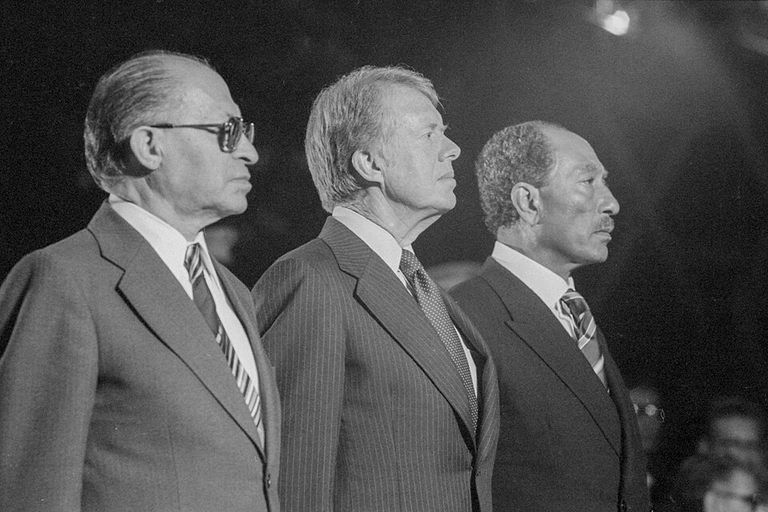
US President Jimmy Carter confers with Israeli Prime Minister Menachem Begin and Egyptian President Anwar Sadat on the porch at Aspen Lodge during the Camp David summit.
Discussion / Hinge Question: Why was the personal intervention of US President Jimmy Carter shown in Source B indispensable to achieving a negotiated compromise between Begin and Sadat?
[3.1] Following Sadat’s visit, direct bilateral negotiations quickly deadlocked over Israeli settlements in Sinai and Palestinian self-rule. To rescue the peace initiative, US President Jimmy Carter invited Begin and Sadat to the secluded presidential retreat at Camp David, Maryland, in September 1978. For thirteen grueling days, Carter mediated between the two leaders, who grew so personally antagonistic that they refused to meet face-to-face for days. Carter conducted relentless single-text diplomacy, personally drafting and revising over twenty proposals between their private cabins (Source B).
[3.2] On 17 September 1978, the summit concluded with the historic Camp David Accords, structured into Two Distinct Frameworks. The first, a vague "Framework for Peace in the Middle East," proposed a five-year transitional self-governing authority for Palestinians in the West Bank and Gaza, but lacked precise timetables and was largely disregarded by Begin. The second, a concrete "Framework for an Egyptian-Israeli Peace Treaty," established a historic trade-off of "land for peace": Israel agreed to completely evacuate the Sinai Peninsula, dismantle all 18 Jewish settlements, and return oil fields to Egypt (as mapped in the Sinai Peninsula territory agreement), in exchange for full diplomatic recognition, demilitarised buffer zones, and guaranteed Israeli passage through the Suez Canal and Straits of Tiran.
[4.1] On 26 March 1979, Begin, Sadat, and Carter signed the formal Egypt-Israel Peace Treaty (Treaty of Washington) on the White House lawn. Backed by billions of dollars in annual US economic and military subsidies to both nations, the treaty saw Israel complete its phased withdrawal from Sinai by April 1982. Crucially, the pact achieved a massive strategic transformation: it detached the Arab world’s largest and most formidable military power from the conflict, rendering another unified Arab multi-front war against Israel virtually impossible.
[4.2] However, this separate peace provoked furious outrage across the Arab world. Arab governments and the PLO denounced Sadat as a traitor who had abandoned the Palestinian struggle in exchange for Egyptian desert. The Arab League expelled Egypt, moved its headquarters from Cairo to Tunis, and severed diplomatic ties. Domestically, radical Islamist groups inside Egypt condemned Sadat’s secular compromise. On 6 October 1981, during a military parade in Cairo, radical soldiers assassinated Sadat in a hail of gunfire. Although the new Egyptian government honoured the peace treaty, Sadat’s assassination proved the extreme domestic and regional perils facing Arab leaders who compromised with Israel.
✍️ Consolidation & Discussion
Recall & AnalysisQ1. Was Anwar Sadat's decision to sign a separate peace treaty with Israel a heroic act of statesmanship or a fatal betrayal of the Arab world?
Guidance: Consider how the treaty recovered 100% of Egyptian land and ended 30 years of catastrophic wars, but isolated Egypt from its Arab allies.
Map Task: The Sinai Demilitarisation & Handback (1979–1982) — Reference Key
Territorial Outcomes Post-1967
Historical Context:
Israel & Occupied Territories (Reference Shading)
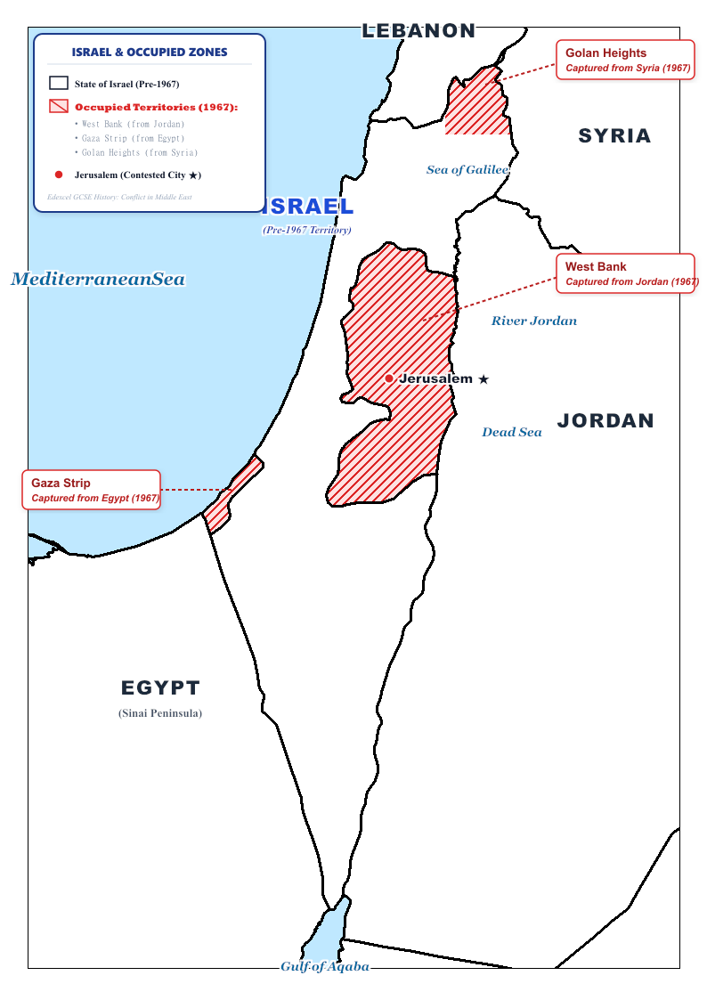
Regional reference map showing 1949 Green Line, West Bank (Jordan), Gaza Strip & Sinai (Egypt), and Golan Heights (Syria).
1967 Six-Day War Macro Territorial Shift

Authentic historical map showing pre-1967 Israel (blue) and newly occupied Egyptian, Syrian, and Jordanian lands (orange).
Pedagogical Check: Pupils should use these two reference maps to ensure their workbook maps correctly differentiate pre-1967 sovereign Israeli territory from the four newly occupied territories. Highlight that East Jerusalem and the Golan Heights were later unilaterally annexed, while Sinai was returned to Egypt under the 1979 Camp David Accords.
🚪 Exit Ticket: Spot the Historical Imposter
Exit Ticket · Two Truths & One Fallacy
Identify the IMPOSTER among these three statements regarding the 1982 Lebanon War:
• Statement A: Israeli Defense Minister Ariel Sharon sent troops far beyond the declared 40-kilometer buffer zone to lay siege to Beirut and expel Yasser Arafat’s PLO leadership to Tunisia.
• Statement B: The Sabra and Shatila massacres were carried out directly by Israeli soldiers following an explicit order from Prime Minister Menachem Begin.
• Statement C: The official Israeli Kahan Commission found Ariel Sharon bore "personal responsibility" for failing to prevent the massacre, forcing his resignation as Defense Minister.
Teacher Guidance: Task: Identify the false statement (Statement B: the massacre was committed by Christian Phalangist militiamen, though Israeli forces encircled the camps) and write the correction.
L2: KT 3.2: The Palestinian Issue: Lebanon, Sabra & Shatila, and the First Intifada, 1974–1993[[SRC_MARKER:L10_Start]]
Learning Objectives
Understand Arafat’s speech to the UN (1974) and the significance of PLO activities in Lebanon.
Analyze Israeli reprisals, the invasion of Lebanon (1982) and the results.
Evaluate the situation in the Israeli occupied territories and the First Palestinian Intifada (1987–93).
While Egypt and Israel made peace, the Palestinians felt abandoned. Operating out of Lebanon, the PLO launched relentless attacks against Israel, leading to the devastating 1982 Israeli invasion of Lebanon. By 1987, Palestinian frustration inside the occupied territories exploded into a spontaneous, grassroots uprising known as the First Intifada.
Did you know?
- Lebanon War (1982): Israel invaded Lebanon to destroy the PLO, resulting in thousands of civilian casualties.
- Intifada (1987): Meaning 'shaking off', this was a massive Palestinian uprising in the West Bank and Gaza involving strikes and stone-throwing.
- Hamas: Formed during the Intifada, this militant Islamic group emerged as a rival to the secular PLO.
Recall & Retrieval
1. Which US President invited Menachem Begin and Anwar Sadat to Camp David in September 1978?
2. How many days of sequestered negotiations took place at the Camp David presidential retreat?
3. What were the two distinct frameworks signed at Camp David on 17 September 1978?
4. On what date was the formal Egyptian-Israeli Peace Treaty signed on the White House lawn?
5. What major captured territory did Israel agree to return to Egypt in exchange for full diplomatic peace?
6. What was the name of the modern Israeli settlement in northern Sinai evacuated and bulldozed in April 1982?
7. Approximately how much annual military and economic aid did the US guarantee to Israel and Egypt?
8. To which North African city did the Arab League move its headquarters after expelling Egypt in 1979?
9. On what date was Egyptian President Anwar Sadat assassinated by Islamist soldiers in Cairo?
10. Which 1979 peace treaty did Anwar Sadat’s successor pledge to uphold, maintaining peaceful relations with Israel?
Vocabulary Check
The Golden Sentence: Choose TWO terms from the word bank. Write ONE grammatically sophisticated, historically accurate sentence connecting them using a causal conjunction (because, although, or consequently):
UN Resolution 3236 | Fatahland | Operation Peace for Galilee | Sabra and Shatila | First Intifada | Iron Fist Policy
Teacher Model / Pupil Sentence:
Source A: Archival Photograph: Yasser Arafat Addressing the United Nations General Assembly in New York (13 November 1974)
Archival Evidence • Expand ▼
[[SRC_MARKER:L10_Source_3]]
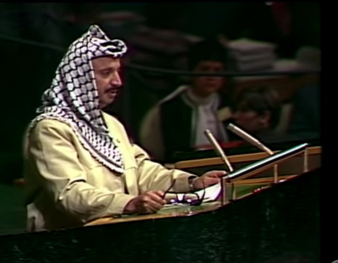
PLO Chairman Yasser Arafat addressing the UN General Assembly in New York, becoming the first non-state leader to speak before the world body.
Discussion / Hinge Question: Why did Yasser Arafat’s speech to the United Nations in Source A provoke both diplomatic breakthrough and intense controversy across the international community?
[1.1] Following the 1973 Yom Kippur War, the Arab League formally recognized the PLO as the "sole legitimate representative of the Palestinian people." In November 1974, PLO Chairman Yasser Arafat made history as the first representative of a non-state movement invited to address the UN General Assembly in New York (Source A). Wearing a holster, Arafat famously concluded: "I have come bearing an olive branch and a freedom-fighter's gun. Do not let the olive branch fall from my hand." This landmark address marked the PLO’s emergence onto the global diplomatic stage, securing permanent UN observer status while maintaining armed struggle.
[1.2] However, following their violent expulsion from Jordan during Black September (1970–71), armed Palestinian factions relocated to southern Lebanon. Exploiting Lebanon’s weak central government and sectarian fractures, the PLO constructed an autonomous, heavily fortified border enclave known as "Fatahland". From these southern bases, guerrillas launched rocket barrages and cross-border raids into northern Israel. On 11 March 1978, Fatah commandos landed by boat and hijacked a civilian bus on Israel's Coastal Road, killing 38 Israeli civilians. In direct retaliation, Prime Minister Menachem Begin ordered Operation Litani, deploying 25,000 Israeli troops into southern Lebanon to push the PLO north of the Litani River. Although UN Security Council Resolution 425 established the UNIFIL peacekeeping buffer, cross-border skirmishes continued.
Source B: Military Map: 1982 Lebanon War (Operation Peace for Galilee)
Archival Evidence • Expand ▼
[[SRC_MARKER:L10_Source_4]]
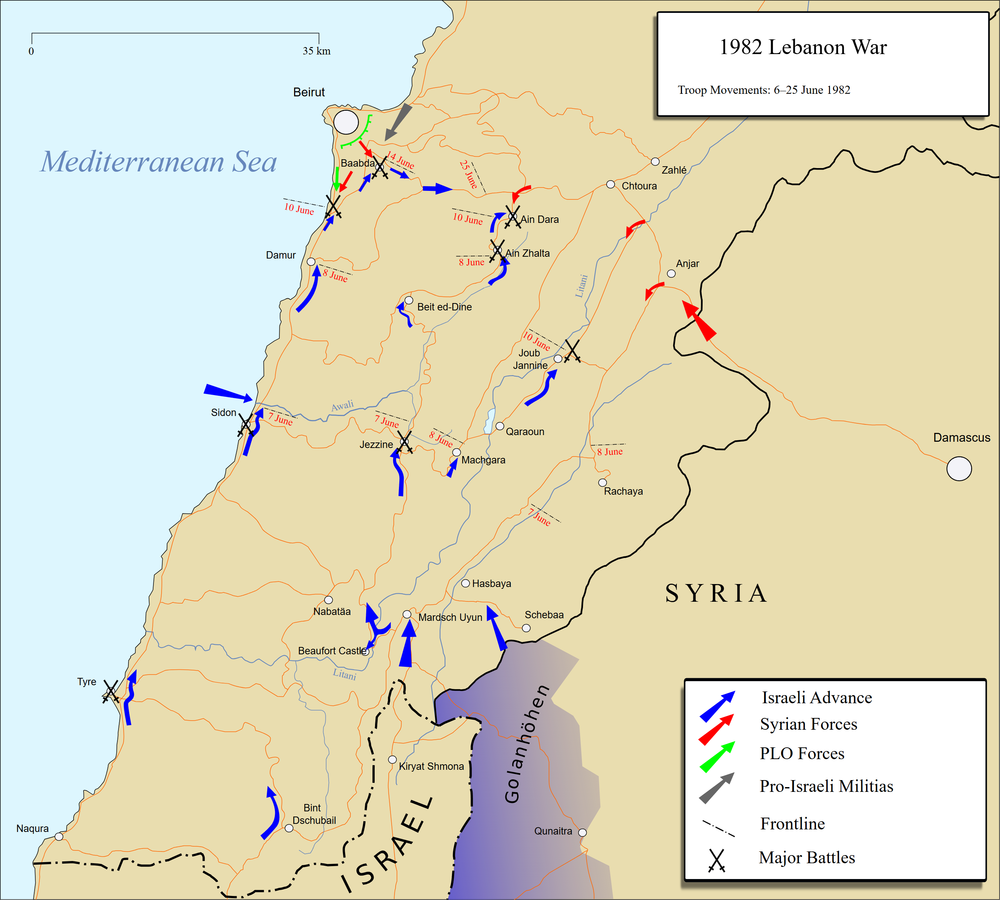
Map illustrating the three Israeli advancing columns north through southern Lebanon to encircle Beirut in June 1982.
Discussion / Hinge Question: How does the operational map in Source B demonstrate why Ariel Sharon was accused of deceiving the Israeli Cabinet regarding the true objectives of Operation Peace for Galilee?
[2.1] On 3 June 1982, the rogue Abu Nidal faction critically wounded Israeli Ambassador Shlomo Argov in London. Although British intelligence confirmed that Arafat's PLO was not involved, hawkish Israeli Defence Minister Ariel Sharon seized upon the assassination attempt as the pretext to launch a long-planned, total military offensive: Operation Peace for Galilee. On 6 June 1982, Israel launched an invasion with 76,000 troops. While Prime Minister Begin publicly announced a limited 40-kilometre security buffer to protect northern Galilee from artillery fire, Sharon systematically drove his armored divisions over 80 kilometres north, advancing all the way to encircle the Lebanese capital, Beirut (Source B).
[2.2] For ten brutal weeks during the summer of 1982, Israeli forces placed West Beirut under siege, trapping 14,000 PLO fighters and hundreds of thousands of Lebanese and Palestinian civilians. Sharon cut off municipal water, electricity, and food supplies while unleashing ferocious air and artillery bombardments. Sharon’s secret strategic objective was total: to eradicate the PLO’s political and military infrastructure, expel Syrian forces from Lebanon, and install a pro-Israeli Christian Maronite government under Bachir Gemayel. Facing mounting civilian casualties and global moral outcry, an American-brokered multinational peacekeeping force supervised the evacuation of Yasser Arafat and over 14,000 fighters by sea in August 1982, scattering the PLO leadership into distant exile in Tunis, Tunisia, 1,500 miles away from Israel's borders.
Source C: Archival Photograph: Palestinian Youths Confronting Israeli Armoured Vehicles in Gaza (First Intifada, December 1987)
Archival Evidence • Expand ▼
[[SRC_MARKER:L10_Source_5]]
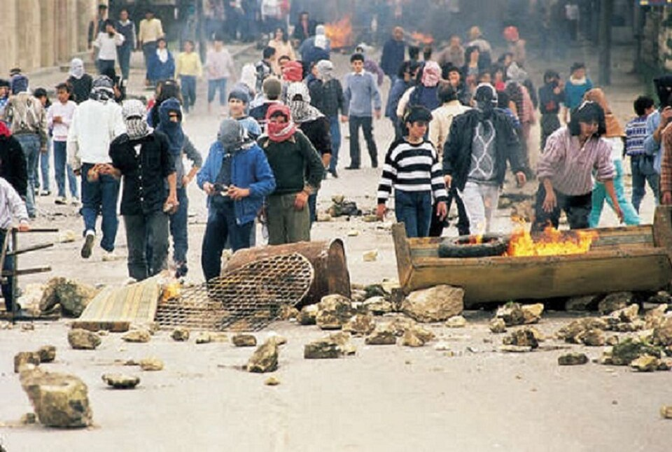
Palestinian youths armed with stones and slingshots confronting an Israeli Defense Forces armoured patrol in the Gaza Strip during the opening weeks of the First Intifada.
Discussion / Hinge Question: How does Source C illustrate why the First Intifada transformed the international image of the Israeli-Palestinian conflict from an Arab military threat into an unequal struggle between an occupying army and civilian youths?
[3.1] On 14 September 1982, Lebanon’s newly elected president, Bachir Gemayel, was assassinated in a massive bomb blast. Seeking revenge, Lebanese Christian Phalangist militias demanded access to the Sabra and Shatila refugee camps in West Beirut. Israeli forces surrounded the camps, sealed all exits, and permitted roughly 150 Phalangist gunmen to enter. Over the next 36 hours, Phalangists slaughtered between 800 and 2,000 unarmed Palestinian civilians while Israeli troops fired illumination flares into the night sky. The atrocity ignited intense international condemnation and a massive protest of 400,000 Israelis in Tel Aviv. In 1983, the independent Israeli Kahan Commission ruled that while Phalangists committed the murders, Defence Minister Ariel Sharon bore "personal and indirect responsibility" for failing to anticipate the bloodshed, forcing his resignation.
[3.2] With the PLO leadership stranded in distant Tunis, the primary front of Palestinian resistance shifted directly to the 1.5 million Palestinians living under military occupation in the West Bank and Gaza Strip. After twenty years of occupation, land confiscations, and identity checks, local resentment reached boiling point. On 8 December 1987, an Israeli military transport vehicle collided with civilian cars near the Jabalia refugee camp in Gaza, killing four Palestinian labourers. Convinced the crash was intentional revenge for a recent stabbing, thousands of Palestinians erupted in spontaneous protests at their funerals. When Israeli soldiers shot and killed a teenage demonstrator, the First Palestinian Intifada ("the shaking off") erupted across Gaza and spread rapidly through the West Bank (Source C).
[4.1] The First Intifada was a popular grassroots civil rebellion led by local underground committees (the Unified National Leadership of the Uprising, UNLU). It mobilized entire communities through general strikes, commercial closures, tax boycotts, barricades, and teenagers hurling stones at Israeli patrols. In December 1987, the rival militant Islamist faction Hamas was founded, rejecting diplomacy and demanding the complete liberation of historic Palestine through armed struggle. In response, Defence Minister Yitzhak Rabin enforced an uncompromising "Iron Fist" policy, instructing troops to use force and "break their bones." Global television broadcasts of heavily armed soldiers beating stone-throwing youths shattered Israel’s traditional image as an underdog, transforming it in world opinion into an oppressive occupying power.
[4.2] Crucially, the Intifada convinced Israeli military leaders, including Rabin, that permanent military occupation was unsustainable and that there was no purely military solution to the Palestinian question. Simultaneously, fearing that grassroots leaders inside the West Bank and Gaza were eclipsing his authority, Yasser Arafat seized the diplomatic initiative. Addressing the UN General Assembly in Geneva in December 1988, Arafat took the historic step of formally renouncing all forms of terrorism, recognizing the State of Israel’s right to exist in peace, and accepting UN Resolutions 242 and 338. This momentous concession satisfied longstanding American conditions, prompting the United States to open official diplomatic dialogue with the PLO for the first time.
✍️ Consolidation & Discussion
Recall & AnalysisQ1. Did the First Intifada prove that grassroots civil resistance was more powerful than 20 years of armed guerrilla warfare?
Guidance: Weigh the diplomatic breakthrough of forcing Israel and the US to talk to the PLO against the heavy civilian casualties and Israeli crackdowns.
🚪 Exit Ticket: The Causal Balance Scale
Exit Ticket · The Causal Balance Scale
Weigh the driving leadership of the First Intifada on a scale of 0 to 10:
• [0] 100% Spontaneous Grassroots Rebellion: Driven entirely by frustrated youth in Gaza and the West Bank throwing stones.
• [5] A Blend: Began spontaneously, but was quickly steered by local clandestine committees (UNLU).
• [10] 100% Orchestrated by Arafat: Controlled and ordered by the PLO leadership in exile from Tunisia.
Teacher Guidance: Task: Where on the scale do you place the uprising, and what is your single piece of historical evidence justifying why the PLO in Tunis was caught off guard?
L3: KT 3.3: Attempts at a Solution: From the Oslo Accords to Oslo II, 1988–1995[[SRC_MARKER:L11_Start]]
Learning Objectives
Understand the significance of Arafat’s renunciation of terrorism in a speech at the UN (1988).
Analyze changing superpower policies in the Middle East: US involvement in the Gulf War (1991), and the end of the Cold War.
Evaluate Arafat, Rabin and the Oslo Accords (1993); the setting up of the Palestinian National Authority; the Israel-Jordan peace treaty (1994); and Oslo II (1995).
The sheer exhaustion of the Intifada forced both sides to the negotiating table in secret. In 1993, the world watched in awe as PLO Chairman Yasser Arafat and Israeli Prime Minister Yitzhak Rabin shook hands on the White House lawn, signing the Oslo Accords. It seemed peace was finally possible, but extremists on both sides were determined to destroy it.
Did you know?
- Oslo Accords (1993): Created the Palestinian Authority with limited self-rule in parts of the West Bank and Gaza.
- Mutual Recognition: The PLO finally recognised Israel's right to exist, and Israel recognised the PLO as the representative of the Palestinians.
- Assassination of Rabin (1995): A right-wing Israeli extremist assassinated Yitzhak Rabin, severely derailing the peace process.
Recall & Retrieval
1. In what year did Yasser Arafat deliver his famous "Olive Branch and Gun" speech at the United Nations?
2. What armed stronghold did the PLO establish in southern Lebanon following their expulsion from Jordan?
3. What March 1978 terrorist attack on a civilian bus near Tel Aviv left 37 Israelis dead?
4. What was the code name of the March 1978 Israeli military invasion of southern Lebanon?
5. What United Nations peacekeeping force was created by Resolution 425 to patrol southern Lebanon in 1978?
6. Which Israeli Defence Minister launched Operation Peace for Galilee on 6 June 1982?
7. For how many weeks did the Israeli military besiege and bombard West Beirut in the summer of 1982?
8. To which North African nation was Yasser Arafat and 14,000 PLO fighters evacuated in August 1982?
9. Which Lebanese Christian President-elect was assassinated on 14 September 1982?
10. What official Israeli judicial inquiry investigated the Sabra and Shatila massacre in 1982–83?
Vocabulary Check
Conceptual Classification: Categorise the terms from the word bank into the two historical boxes below:
Two-State Solution | Madrid Conference | Oslo I Accords | Oslo II Accords | Area A, B, C | Yigal Amir
Power, Governance & Warfare
Economy, Trade & Society
Source A: Archival Photograph: The Opening Session of the Madrid Peace Conference (October 1991)
Archival Evidence • Expand ▼
[[SRC_MARKER:L11_Source_4]]
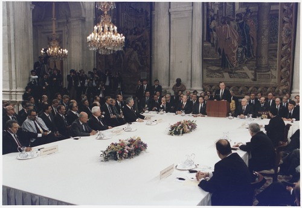
Delegates from Israel, Egypt, Syria, Lebanon, and a joint Jordanian-Palestinian delegation convene in Madrid under the co-sponsorship of the United States and the Soviet Union.
Discussion / Hinge Question: Why did the convening of the Madrid Peace Conference in Source A represent a dramatic psychological turning point in Middle Eastern diplomacy despite producing few immediate formal treaties?
[1.1] The collapse of the Soviet Union (1989–1991) fundamentally transformed the geopolitical landscape of the Middle East. The PLO and hardline Arab states lost their primary diplomatic patron, arms supplier, and superpower shield. Simultaneously, over 400,000 Soviet Jews immigrated to Israel between 1989 and 1992, placing massive financial strain on the Israeli state. When right-wing Prime Minister Yitzhak Shamir directed these immigrants into West Bank settlements, US President George H.W. Bush dramatically intervened by withholding $10 billion in US loan guarantees until settlement construction ceased. This unprecedented American financial pressure exposed Israel’s economic reliance on Washington and undermined Shamir’s Likud government.
[1.2] Concurrently, the PLO suffered a catastrophic self-inflicted blow during the 1990–1991 Gulf War. When Iraqi dictator Saddam Hussein invaded Kuwait, PLO Chairman Yasser Arafat made the disastrous decision to publicly endorse Saddam, hoping Iraq would link its withdrawal to Palestinian statehood. Following the swift US-led coalition victory, infuriated Gulf monarchies—especially Saudi Arabia and Kuwait—severed all financial subsidies to the PLO and expelled over 300,000 Palestinian workers. Bankrupt, diplomatically isolated, and outflanked by the grassroots momentum of the First Intifada inside the occupied territories, Arafat was in a desperate position. Leveraging this historic alignment of superpower dominance, the US and USSR co-sponsored the Madrid Peace Conference in October 1991 (Source A), seating Israeli and Arab delegates together for the first time. Although formal public negotiations deadlocked, the June 1992 election of Yitzhak Rabin's Labour government on a peace platform created an opening for genuine diplomacy.
Source B: Archival Photograph: The Historic Oslo I Handshake on the White House Lawn (13 September 1993)
Archival Evidence • Expand ▼
[[SRC_MARKER:L11_Source_5]]
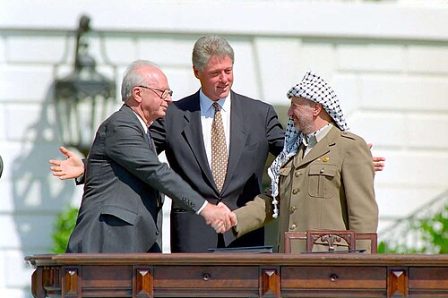
Israeli Prime Minister Yitzhak Rabin and PLO Chairman Yasser Arafat shake hands on the South Lawn of the White House, hosted by US President Bill Clinton, following the signing of the Declaration of Principles.
Discussion / Hinge Question: How does Source B capture the psychological breakthrough of mutual recognition, and why did this iconic handshake provoke ferocious opposition from hardliners on both sides?
[2.1] Frustrated by public posturing and procedural deadlock at official talks in Washington, newly elected Israeli Prime Minister Yitzhak Rabin and Foreign Minister Shimon Peres authorized a deniable, secret diplomatic backchannel. Beginning in January 1993, Norwegian social scientist Terje Rød-Larsen and Foreign Minister Johan Jørgen Holst hosted 14 clandestine rounds of direct negotiations between Israeli academics and senior PLO representatives in isolated country houses near Oslo, Norway. Free from media scrutiny and political posturing, the negotiators forged personal bonds and crafted an unprecedented bilateral compromise: mutual diplomatic recognition.
[2.2] In early September 1993, Rabin and Arafat signed the historic Letters of Mutual Recognition: the PLO formally recognized Israel’s right to exist in peace and security, accepted UN Resolutions 242 and 338, and renounced all forms of terrorism; in return, Israel officially recognized the PLO as the legitimate representative of the Palestinian people. This paved the way for the signing of the Declaration of Principles (Oslo I) on 13 September 1993 on the South Lawn of the White House (Source B). Before 3,000 dignitaries and a global television audience, US President Bill Clinton gently nudged Rabin and Arafat into a historic handshake. Oslo I established a 5-year interim timetable for Palestinian self-government, beginning with Israeli withdrawal from the Gaza Strip and the West Bank town of Jericho, while deferring explosive "permanent status" issues—Jerusalem, refugees, borders, and Jewish settlements—to future talks.
Source C: Cartographic Map: The Fragmentation of the West Bank into Areas A, B, and C under Oslo II (1995)
Archival Evidence • Expand ▼
[[SRC_MARKER:L11_Source_6]]
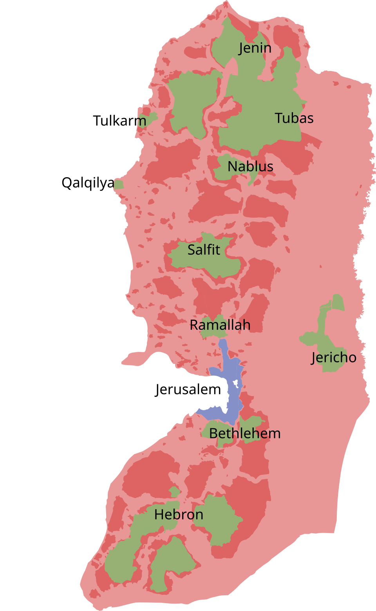
Official map illustrating the territorial division of the West Bank under the 1995 Oslo II Agreement: Area A (Palestinian civil & security control), Area B (Palestinian civil & Israeli security control), and Area C (full Israeli military & civil control covering 60% of the land).
Discussion / Hinge Question: Why did the fragmented territorial distribution of Areas A, B, and C shown in Source C lead many Palestinians to conclude that Oslo II created an unviable patchwork of isolated cantons rather than a sovereign state?
[3.1] The breakthrough of Oslo I unleashed immediate regional diplomatic momentum. In May 1994, Rabin and Arafat signed the Cairo Agreement (Gaza-Jericho Agreement), initiating the withdrawal of Israeli forces and enabling Yasser Arafat to make a triumphant return from exile on 1 July 1994 to head the newly established Palestinian National Authority (PNA). Recognizing that the PLO had made peace with Israel, King Hussein of Jordan felt politically liberated to formalize relations. On 26 October 1994, Jordan and Israel signed a comprehensive Peace Treaty in the Arava Valley, settling border disputes, guaranteeing Jordanian water quotas from the Sea of Galilee, and recognizing Jordan’s historic custody over Islamic holy sites in Jerusalem. In December 1994, Rabin, Peres, and Arafat were jointly awarded the Nobel Peace Prize.
[3.2] However, translating interim principles into broader territorial self-rule across the West Bank proved intensely difficult. On 28 September 1995, Rabin and Arafat signed the Interim Agreement on the West Bank and Gaza Strip (Oslo II / Taba Agreement). Oslo II partitioned the West Bank into three distinct administrative categories (Source C): Area A (18% of land, 55% of Palestinians) encompassing major urban cities under full PNA civil and internal security control; Area B (22% of land, 41% of Palestinians) covering 450 rural towns and villages under PNA civil administration but joint Israeli military security; and Area C (60% of land, 4% of Palestinians) covering all open land, strategic aquifers, Jordan Valley borders, and all 130 Jewish settlements, remaining under exclusive Israeli civil and military control. This created an archipelago of non-contiguous Palestinian enclaves surrounded by Israeli military checkpoints.
Source D: Archival Photograph: The Tel Aviv Peace Rally Moments Before the Assassination of Yitzhak Rabin (4 November 1995)
Archival Evidence • Expand ▼
[[SRC_MARKER:L11_Source_7]]
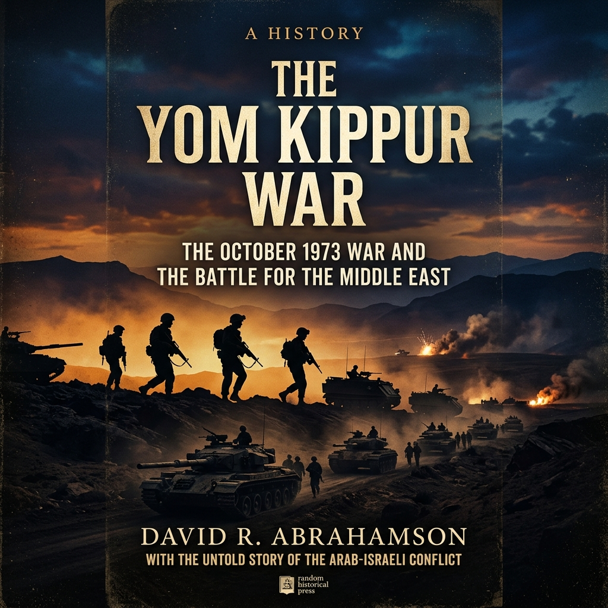
Prime Minister Yitzhak Rabin addresses over 100,000 Israelis singing "A Song for Peace" at the Kings of Israel Square in Tel Aviv minutes before he was shot dead by a right-wing Jewish extremist.
Discussion / Hinge Question: How does Source D illustrate the tragic reality that the Oslo peace process was derailed not by external Arab armies, but by internal political violence and ideological polarization within Israeli society?
[4.1] Territorial compromise provoked violent resistance from ideological extremists on both fringes who rejected any mutual coexistence. On 25 February 1994, radical American-Israeli settler Baruch Goldstein opened fire with an automatic rifle inside Hebron’s Ibrahimi Mosque, murdering 29 Palestinian worshippers during Ramadan. In declared retaliation, the militant Islamist group Hamas and Palestinian Islamic Jihad launched a devastating campaign of suicide bus bombings inside Tel Aviv, Jerusalem, and Afula, killing scores of Israeli civilians and severely eroding the Israeli public’s faith in the peace process. Simultaneously, right-wing Israeli nationalist and religious factions mounted venomous campaigns against Prime Minister Rabin, depicting him at street rallies in Nazi SS uniforms and branding him a traitor for ceding biblical land ("Judea and Samaria").
[4.2] On the evening of 4 November 1995, following a massive peace rally of over 100,000 citizens in Tel Aviv’s Kings of Israel Square under the banner "Yes to Peace, No to Violence" (Source D), Yitzhak Rabin was assassinated. As the Prime Minister walked toward his car having just sung "A Song for Peace," Yigal Amir, a 25-year-old right-wing Jewish law student and religious extremist, shot Rabin at point-blank range in the back. Amir declared that Jewish law sanctioned the murder of any leader who surrendered ancestral land to non-Jews. Rabin’s assassination dealt a devastating, fatal psychological blow to the peace process. Deprived of Rabin’s unmatched military credibility and stature, the peace movement foundered; in May 1996, following renewed Hamas bus bombings, Israeli voters narrowly elected right-wing Likud leader Benjamin Netanyahu, who opposed the Oslo Accords. By deferring permanent status issues and failing to curb extremist violence on either side, the Oslo framework collapsed into mutual recrimination and eventual deadlock.
✍️ Consolidation & Discussion
Recall & AnalysisQ1. Why was the assassination of Yitzhak Rabin on 4 November 1995 one of the most consequential turning points in modern Middle Eastern history?
Guidance: Consider how Rabin was the only Israeli leader with the military credibility to convince the Israeli security establishment to trade land for peace.
Map Task: The Oslo II West Bank Administrative Matrix (1995) — Reference Key
Territorial Outcomes Post-1967
Historical Context:
Israel & Occupied Territories (Reference Shading)
Regional reference map showing 1949 Green Line, West Bank (Jordan), Gaza Strip & Sinai (Egypt), and Golan Heights (Syria).
1967 Six-Day War Macro Territorial Shift
Authentic historical map showing pre-1967 Israel (blue) and newly occupied Egyptian, Syrian, and Jordanian lands (orange).
Pedagogical Check: Pupils should use these two reference maps to ensure their workbook maps correctly differentiate pre-1967 sovereign Israeli territory from the four newly occupied territories. Highlight that East Jerusalem and the Golan Heights were later unilaterally annexed, while Sinai was returned to Egypt under the 1979 Camp David Accords.
🚪 Exit Ticket: Split-Perspective Front Page
Exit Ticket · Split-Perspective Headlines
Write two 6-word newspaper headlines capturing the historic handshake between Yitzhak Rabin and Yasser Arafat on the White House lawn (13 September 1993):
• Headline A (Optimistic Global View - The New York Times): Celebrating historic mutual recognition and hope for peace.
• Headline B (Skeptical / Militant View - Hamas or Right-Wing Israeli Settler): Condemning the accords as a fatal betrayal.
Teacher Guidance: Strict constraint: Exactly 6 words per headline!
Generated: 2026-10-19 15:36:42 UTC | Unit: cme_new